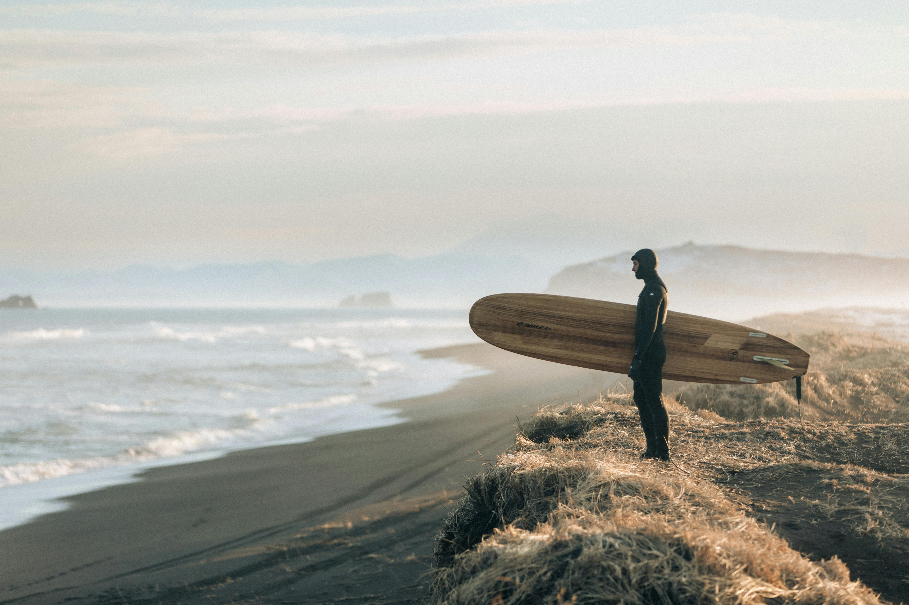

Topsail Beach’s inviting waters are perfect for swimmers of all levels. The gentle waves provide a relaxing environment for a leisurely swim while also offering enough movement for a more vigorous workout. Always swim in designated areas and follow local safety guidelines to ensure a fun and safe experience.
Set sail from Topsail Beach and navigate the picturesque North Carolina coastline. Whether you’re an experienced sailor or trying it for the first time, the calm waters and favorable winds make for an ideal sailing adventure. Local marinas offer charters and lessons if you’re looking to learn or need a boat.
The expansive beaches at Topsail provide a natural setting for a variety of workouts. Take a jog along the shore, join a beach yoga class, or participate in a game of beach volleyball. The soft sand and ocean breeze add a refreshing twist to any exercise routine.
With its consistent waves, Topsail Beach is a surfer’s haven. Surf shops and schools along the beach offer lessons and rentals, making it easy for beginners to get started and for seasoned surfers to catch the perfect wave.